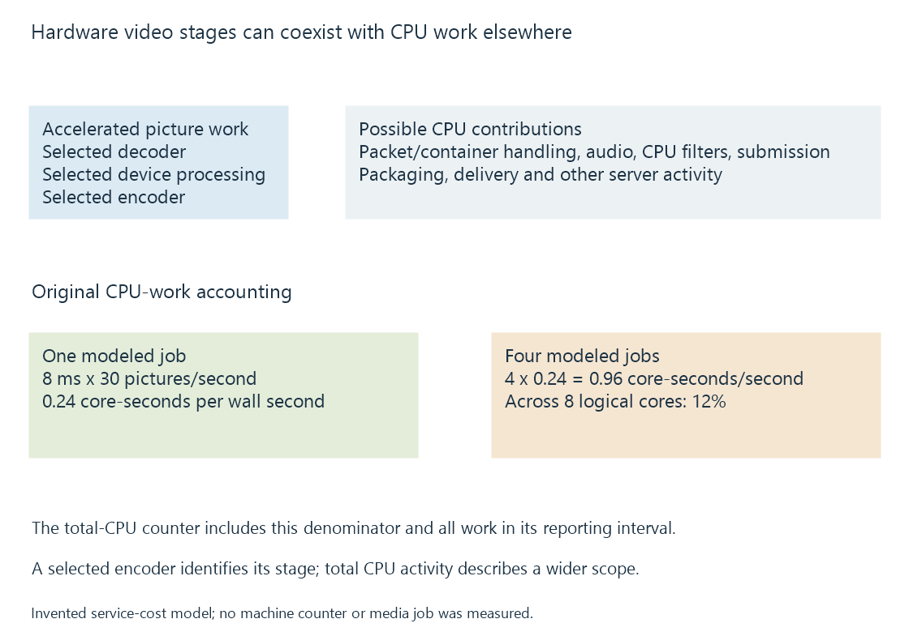

Why hardware acceleration can still use the CPU
CPU activity during accelerated media processing can come from unaccelerated stages, host coordination and concurrent work, so its meaning depends on the complete selected workload.
Hardware acceleration assigns supported work to particular device paths. The application and other media stages still have work on the CPU.
A high overall CPU number therefore needs a workload explanation before it becomes evidence that hardware decoding or encoding failed.
Identify the CPU’s tasks
| Work | Possible CPU contribution |
|---|---|
| Container and packet handling | Source reads, parsing and stream selection |
| Audio processing | Selected decode, channel processing or encoding |
| Subtitle/picture work | A selected CPU renderer or filter |
| Device coordination | Submission, queues, callbacks and resource handling |
| Delivery | Packaging, temporary output and request handling |
| Other server activity | Concurrent jobs and library/system work |
NVIDIA's decoder documentation, for example, separates its software parser from the dedicated reconstruction engine. An application can consequently perform CPU parsing while NVDEC is doing its selected decode work.

Small per-picture work can accumulate
Use an original model with eight milliseconds of CPU work per picture at thirty pictures per second:
0.008 CPU seconds × 30 pictures = 0.24 CPU seconds per wall second
If the modeled work uses one core at a time, it is about 24% of one core's time. Four equivalent independent jobs request 0.96 core-seconds per wall second.
On an ideal eight-core total-time denominator, that is 12% aggregate CPU time. The actual reporting convention, scheduling and extra work determine a real utilization display.
The numbers are invented. They show why a per-picture cost, a per-core percentage and a machine-total percentage should not be interchanged.
Observation scope by stage
| Evidence | What it establishes |
|---|---|
| Hardware encoder successfully initialized | Selected output encoder path |
| Hardware decoder produces pictures | Selected reconstruction progress |
| CPU filter appears in the graph | A picture-processing path needing its CPU contract |
| Total CPU utilization is high | Combined activity under that reporting interval |
| Conversion falls below playback rate | Deficit somewhere in the complete producer route |
A hardware encoder name does not prove every upstream operation used hardware. Conversely, total CPU utilization does not erase a successfully running hardware stage.
Preserve the compared workload
An Emby session with a newly selected burn-in subtitle can introduce CPU picture work while keeping the same hardware decoder and encoder.
Changing simultaneous jobs or output dimensions also changes demand. Compare the same source, selected tracks, target and job count before assigning the difference to acceleration.
Transcoding logs supply operation and progress evidence that can be related to the observation interval.
See Also
- Mixed hardware and software filtering
- Copy-back video pipelines
- Concurrent encoder sessions, policy and capacity
- Hardware acceleration in Emby Server
- Reading a transcoding log
- Concurrent playback workloads